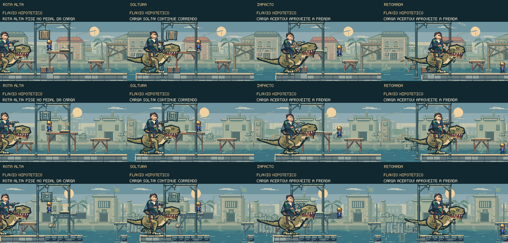
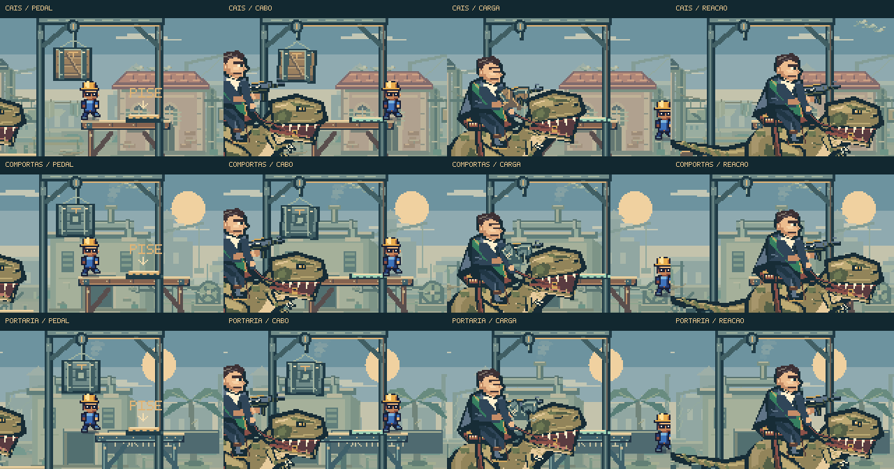
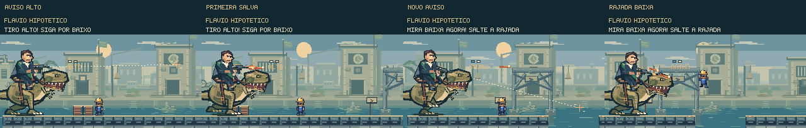

Ganhar distância
usando o cenário.
Pedais dourados, cabos e cargas suspensas criam três oportunidades de conter o perseguidor. Feka pode subir, soltar uma carga atrás de si e aproveitar a freada para continuar a fuga. A portaria termina com uma sequência de tiros em duas alturas, cada uma com seu aviso.
Jogar a perseguição →Ver as animações ↓
Pisar, soltar, acertar, seguir.
8,2 segundos de composição dirigida, sem áudio, usando os renderizadores do jogo. As posições e os impactos foram preparados para apresentar a arte; o vídeo não é uma gravação de partida.
O pedal responde ao apoio dos pés, sem exigir um comando novo ou interromper o movimento. Ele funciona uma vez e depende de sua plataforma continuar presente. A carga tem tempo de queda e precisa atingir o corpo do perseguidor para freá-lo.
O peito comprime, a cabeça recua e o cavaleiro absorve a desaceleração com atraso. Rédeas, roupa e cauda acompanham o gesto. A carga se rompe em painéis e fragmentos que caem até o rio.
Escolhas ao longo da travessia.
| Trecho | Construção do percurso | Oportunidade |
|---|---|---|
| Cais | Plataforma baixa, patamar com pedal e saída em descida. | Primeira carga de madeira, próxima do capacete da rota elevada. |
| Carga | Andaimes em quatro alturas, com moedas acima da pista. | Escolher altura e voltar ao percurso durante a investida. |
| Comportas | Nova sequência de três plataformas, com entrada e saída separadas. | Soltar o contrapeso de metal e ganhar distância após o checkpoint. |
| Portaria | Pedal na rota elevada, seguido dos vãos finais. | Interromper a investida antes da combinação de rajadas. |
Os pisos elevados também bloqueiam projéteis enquanto estão presentes. Quando desabam, deixam de oferecer apoio e cobertura. Uma carga que passa sem acertar o chefe cai no rio quando perde o chão atrás dele.
Peças que pertencem ao cais.

A estrutura do guincho se prende a pilares próprios. O pedal fica rente ao patamar, com uma pequena compressão ao ser acionado. Os efeitos de quebra usam as cores do material atingido e ficam concentrados no contato.
A mudança de mira tem seu próprio aviso.

Os ataques têm durações próprias. Uma entrada de ataque que ficou para trás expira, evitando que a fila antiga comece a disparar sobre outro trecho do percurso. A carga cancela os disparos ainda não feitos; balas que já saíram da arma continuam perigosas.